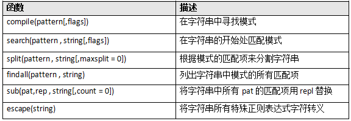
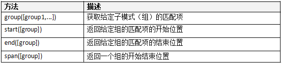

这部分主要讲的是python中的re模块。
最简单的正则表达就是普通字符串的匹配，即字符串‘abcd’匹配字符串‘abcd’。
正则表达式可以匹配多个字符，比如点号 . 可以匹配任何字符，这类统称通配符。
比如需要匹配“python.org”，可以使用‘python.org’，但可能会匹配到别的字符串如"pythonzorg"，因此需要转义，即特殊字符前加斜线\，如本例可用'python.org'
即通过设定一组字符对其进行匹配，通过中括号括起来：[a-g] 表示可以匹配到字母表中a-g的任何小写字符，同理也可以将这些字符串一个接一个的排列进去：[a-zA-Z0-9] 可以匹配到任何数字和任意大小写的字母。 反转字符集表示出了这之外的字符都匹配：[^abc]表示匹配除了a b c三个字符的字符。
若之相匹配某几个字符串，比如"abc"和"abef"，可采用选择特殊字符：'abc|abef'。
前述例子也可以采用子模式：'ab(c|ef)'，括号即子模式。
在子模式后面积上问号，使其变为可选项。它可能出现在匹配字符串，但不是必须的。如字符串：
'(http://)?(www\.)?python\.org'
可以匹配到：
'http://www.python.org'
'http://python.org'
'www.python.org'
'python.org'
(patten)*允许模式重复0或多次；(patten)+允许模式重复1或多次；(patten){m,n}允许模式重复m到n次。例如：
'w*\.python\.org'可匹配'www.python.org'或'.python.org'或'wwwwwwwww.python.org'
'w+\.python\.org'可匹配'www.python.org'或'w.python.org'或'wwwwwwwww.python.org'
'w{3.4}\.python\.org'只能匹配'www.python.org'或'wwww.python.org'

re.compile将正则表达式转换为模式对象，可以实现效率的匹配。
re.search会在给定的字符串中寻找第一个匹配给正则字符串的子字符串，返回值是true或者false。
re.math会在给定字符串的开头匹配正则表达式。因此，re.math('p','python')返回真，而re.math('p','www.python')则返回假。
re.split会根据模式的匹配项来分割字符串。
import re
some_text = 'alpha , beta ,,, gama delta'
re.split('[,]+',some_txt)
将返回：
['alpha ','beta ','gama delta ']
re.findall将返回所有匹配到的匹配项：
import re
pat = '[a-zA-Z]+'
text = '"Hm...err -- are you sure?" he said, sounding insecure.'
re.findall(pat,text)
will return:
['Hm','err','are','you','sure','he','said','sounding','insecure']
re.sub: 使用给定的替换内容将匹配模式的字符串（最左端并且覆盖子字符串）替换掉：
import re
pat = '{name}'
text = 'Dear {name}...'
re.sub(pat,'Mr. Gumby',text)
will return:
'Dear Mr. Gumby...'
re.escape：可以对字符串中所有可能被解释为正则运算符的字符进行转义的应用函数。
如果字符串很长且包含很多特殊字符，而你又不想输入一大堆反斜线，可以使用这个函数：
e.g.
re.escape('www.python.org')
will return:
'www\.python\.org'
re.escape('but where is the ambiguity?')
will return:
'but\ where\ is\ the\ ambiguity\?'
简单来说，组就是放置在圆括号里内的子模块，组的序号取决于它左侧的括号数。组0就是整个模块，所以在下面的模式中：
‘There (was a (wee) (cooper)) who (lived in Fyfe)’
包含组有：
0 There was a wee cooper who lived in Fyfe
1 was a wee cooper
2 wee
3 cooper
4 lived in Fyfe
re模块中匹配对象和组的函数：

e.g.
import re
m = re.match(r'www\.(.*)\..{3}','www.python.org')
m.group()
will return
'www.python.org'
m.group(0)
will return
'www.python.org'
m.group(1)
will return
'python'
m.start(1)
will return:
4
m.end(1)
will return:
10
m.span(1)
will return:
(4,10)
group方法返回模式中与给定组匹配的字符串，如果没有组号，默认为0 ；如上面：m.group()==m.group(0) ；如果给定一个组号，会返回单个字符串。
start 方法返回给定组匹配项的开始索引，
end方法返回给定组匹配项的结束索引加1；
span以元组（start，end）的形式返回给组的开始和结束位置的索引。
finditer( rule , target [,flag] )
参数同findall，这个函数返回的是一个迭代器
finditer函数和findall函数的区别是，findall返回所有匹配的字符串，并存为一个列表，而finditer则并不直接返回这些字符串，而是返回一个迭代器。关于迭代器，解释起来有点复杂，还是看看例子把：
>>> s=’111 222 333 444’
>>> for i in re.finditer(r’\d+’ , s ):
print i.group(),i.span()#打印每次得到的字符串和起始结束位置
结果是
111 (0, 3)
222 (4, 7)
333 (8, 11)
444 (12, 15)
简单的说吧，就是finditer返回了一个可调用的对象，使用 for i in finditer()的形式，可以一个一个的得到匹配返回的 Match对象。这在对每次返回的对象进行比较复杂的操作时比较有用。